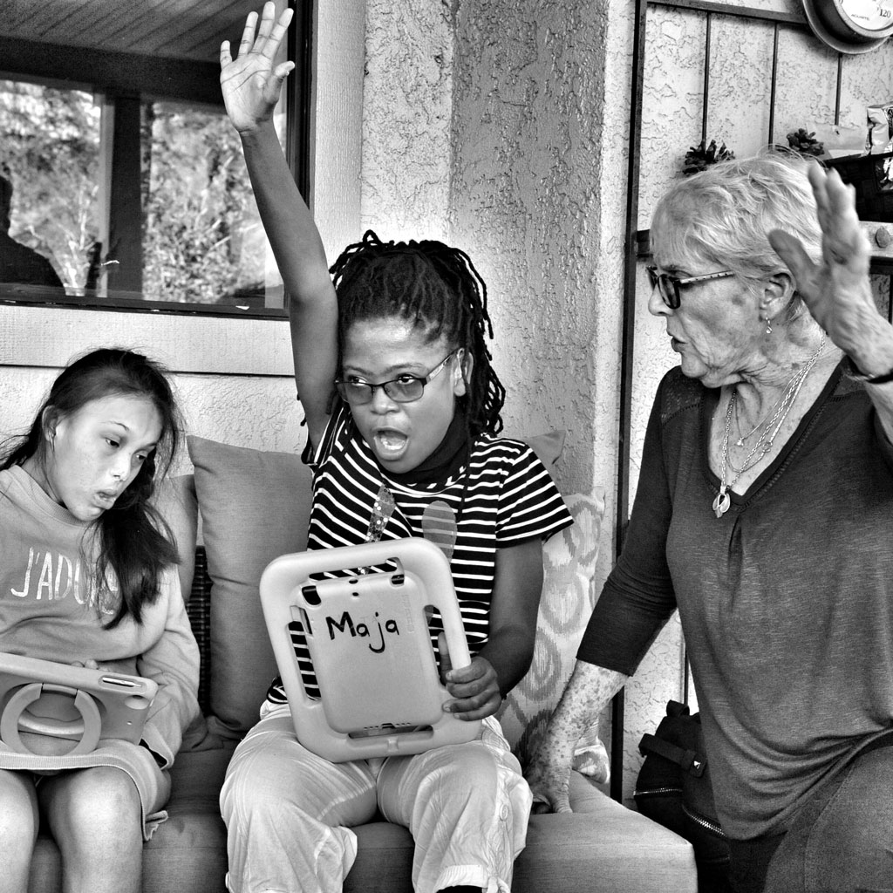

The CREST Experience

CREST carries on a tradition and successful methodology created by two pioneers in the field of special education. Over 60 years ago, long before the term autism was widely used, Aleen Agranowitz and Gladys Gleason started working with children who had speech and language difficulties. The founders of CREST spent over 50 years working side by side with Aleen and Gladys in developing strategies to best meet the unique needs of their students. CREST continues to embody the legacy of that work.
CREST’s school program is designed to provide special education and therapies for students whose needs cannot, or are not, being met in their local school district. Students who attend CREST Education Center are provided an environment that allows them to maximize their potential and become productive members of society. The classroom programs are designed to provide intensive, individualized instruction in all academic areas, making use of strengths while remediating areas of need. Individual or small group therapies in the areas of speech, language, behavior and motor skills focus on further individualizing and intensifying their educational experience.
CREST does not rely upon a specific approach but rather uses a diverse approach that allows each student to demonstrate their true ability and areas of interest rather than being defined by either their diagnosis or their symptomology. As each student is unique, the approach to their educational experiences must be equally unique – this is a hallmark of CREST Education Center.
Classrooms are designed to meet the individual needs of students with designated learning centers. Classroom assistants are utilized as needed to provide reinforcement, repetition, and behavioral support. Therapies may be delivered in separate “offices” designed for the purpose of the specific therapy, in the classroom environment, or in a natural environment. In all activities, collaboration between the special education teacher, the therapists, parents and any other supporting personnel is of utmost importance. Integration into a natural environment is also utilized for community integration, whether for social or vocational activities.
Specific activities of the program include:
Classroom Academics: basic literacy (including recognition and comprehension of written material), mathematics (number recognition, calculation and processes), science, and social sciences. Curriculum materials are based on those utilized for students in general education settings based on California Common Core with specific modifications to meet the needs of the students in the program. This ensures that students have exposure to and are able to benefit from a typical classroom curriculum. Additional California State Department of Education approved curriculum designed specifically for students with special needs is also utilized.
Social Skill Development: students who are unable to communicate effectively often resort to behaviors as an attempt to get their needs met. These students are often unaware of the effect that their behaviors have on others and do not recognize they are often effectively removing themselves from making and maintaining relationships with peers as well as adults. Developing a system of communication helps to ameliorate the behaviors but at the same time the students require specific education in developing appropriate social behaviors. By using appropriate peer modeling, feedback, and roleplaying students are assisted in developing social skills that enable them to be a part of their various communities.
Sensory and Motor Skill Development: many of the students present with impaired sensory systems, meaning that they do not process and coordinate basic sensory information. Specific therapies are designed to assist students in either sensitizing or de-sensitizing sensory input so they are better able to adjust to their environment. Additionally, students often do not develop gross motor skills that lead to participation to basic activities related to play (I.e., hopping, skipping, jumping) and sport activities (i.e., basketball, baseball).
Communication/Language Development: Recognizing that communication is basic to the development of all academic and behavioral skills, a variety of approaches are utilized, including but not limited to verbal speech production, sign language, all forms of technology (i.e., programs designed for iPads), and physically supported communication. The outcomes will result in students acquiring the skills to effectively communicate with their families, peers, and others in their community.
Behavior Remediation: A common thread of many of the students enrolled in the program is a limitation in the ability to communicate effectively often resulting in aberrant or inappropriate behaviors. Behavioral concerns are approached based on analyzing the function of the behavior and then providing peer reviewed therapies.
Activities as described above are presented in both the classroom environment and individual/small group therapies.
Classroom/Therapy Staff: Classroom activities are conducted by credentialed special education teachers with appropriate education and training in meeting the needs of students with autism or other related developmental activities. Therapists holding credentials/licenses in respective fields of expertise that may include speech/language therapy (Speech/Language Pathologists), Occupational Therapy (including expertise in sensory integration and fine motor skills), Gross Motor Skills (Adapted Physical Education Specialists) and Behavior (Certified Behavior Analysts) are also onsite. Therapies may also be delivered by appropriately certified interns or other recognized titles related to fields of expertise.
In order to best emulate a typical educational environment, the educational and therapy activities are conducted during normal school hours (8:30 am – 2:30 pm), Monday through Friday, 180 days a year (as mandated by California Department of Education) with an additional 20 days for Extended School Year (sometimes referred to as Summer School).
The activities of CREST Education Center are 100% dedicated to providing education and therapy to its students. Funding for the program is through fee-for-service from referring school districts supplemented by fund-raising activities.